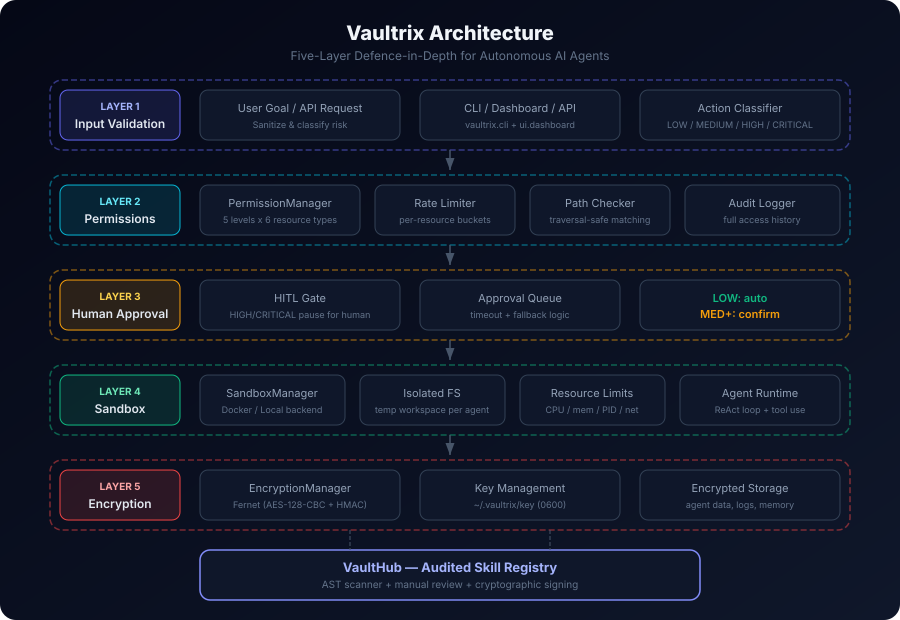
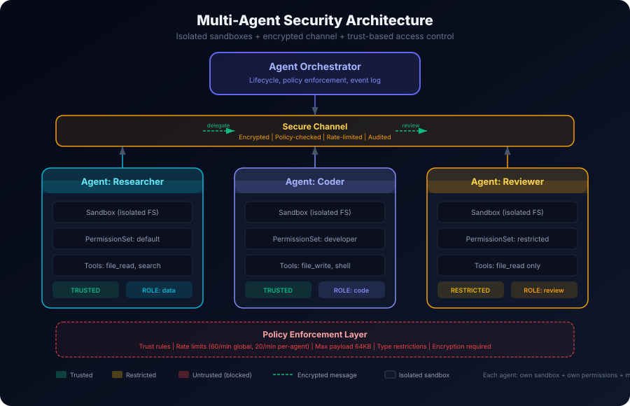

Vaultrix is a secure execution framework for AI agents. Five defence layers — sandboxing, permissions, human-in-the-loop, encryption, and audited skills — so agents can act autonomously without acting dangerously.
* Docker enhances isolation but is optional — macOS kernel sandbox or local sandbox works out of the box.
Every layer independently prevents a class of failure. Combined, they make autonomous agents safe to deploy.
Agents run in isolated environments — Docker containers, macOS kernel sandbox, or local subprocess — with CPU/memory quotas, filesystem restrictions, and path-traversal protection. Auto-detects the best backend.
Five permission levels across six resource types. Path-aware, rate-limited, temporally scoped. Deny by default.
High-risk actions pause for human approval. Risk classification is automatic — LOW auto-executes, MEDIUM logs, HIGH/CRITICAL require confirmation.
All agent data, memory, and logs encrypted with Fernet (AES-128-CBC + HMAC). Keys stored locally with 0600 permissions. Zero-knowledge architecture.
AST-based static analysis blocks dangerous imports, eval/exec, subprocess calls, and network access before skills are approved.
Every tool declares required permissions. The agent loop checks access before invocation. Denied tools return clear errors, never silently fail.
Each layer is independent. Compromise one, the others still hold.
Sanitise & classify
Granular access control
HITL for risky actions
Docker / macOS / Local isolation
Data protection

Multiple agents, each isolated, communicating through encrypted channels with trust-based access control.

Manages the lifecycle of multiple agents. Each gets its own sandbox, permissions, and role. Enforces fleet-wide limits.
All inter-agent messages are encrypted, policy-checked, rate-limited, and recorded in an immutable audit trail. No direct communication.
Configurable trust levels between agents: UNTRUSTED, RESTRICTED, STANDARD, TRUSTED, FULL. Controls who can talk to whom and share what.
Rate limits (global + per-agent), message size caps, type restrictions, and mandatory encryption. Violations are blocked and logged.
A lead agent can delegate subtasks to specialist agents. Results flow back through the secure channel. Full traceability.
Each agent runs in its own sandbox with its own filesystem. No shared state by default. Resource sharing requires explicit trust rules.
Real output from python examples/cli_demo.py — no mocks, no fakes.
No Docker required. Works on macOS, Linux, and WSL.
Grab the repo and install into a virtualenv.
git clone https://github.com/tigerneil/vaultrix.git
cd vaultrix
pip install -e .
Walk through all 6 security features interactively.
python examples/cli_demo.py
Launch the agent in interactive sandbox mode.
vaultrix start --interactive
Run the security scanner on any Python skill directory.
vaultrix skill init my-skill
vaultrix skill check my-skill
Vaultrix is open source and looking for contributors: security researchers, LLM/agent engineers, and cryptography engineers.